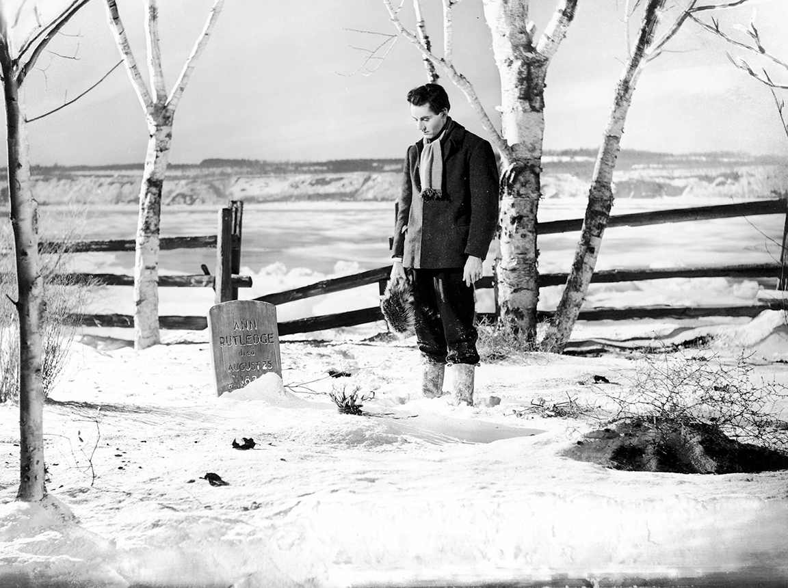
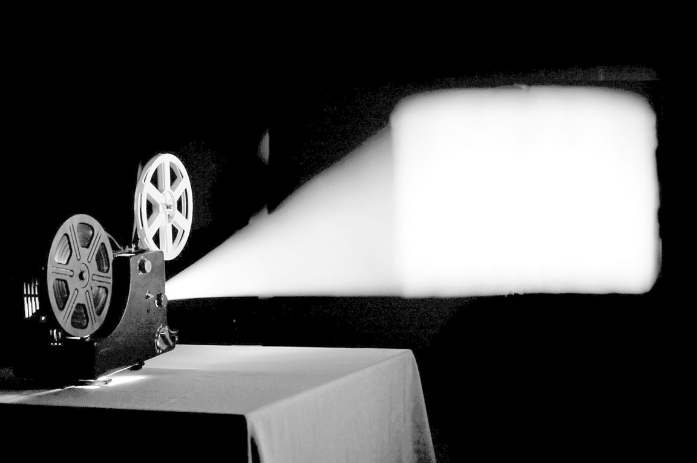
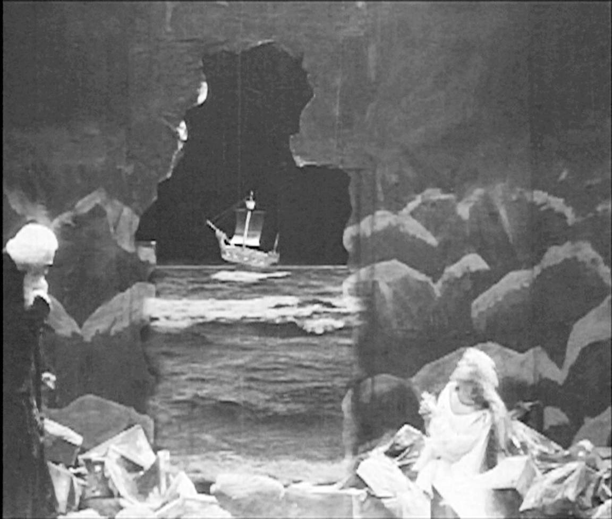

一个男子站在乡村墓地。他静立于墓前，一切都未移动；没有飞鸟，世界静止。但此人身处一部电影中，我们之前看到他在走动，当他的冥想和回忆结束时，他还会走动。这部电影是约翰·福特导演的《青年林肯》（1939）。这个人是亨利·方达，他饰演的是林肯，徘徊在安·拉特利奇墓前的忧伤的林肯。
你喜欢这个镜头和它的取景，于是你暂停电影。现在它看起来感觉完全不同了。怎么会呢？一个静止画面跟一个没有运动的电影场景之间有什么不同？你再播放，然后再暂停。是的，完全不同。然后你意识到，图像后有一条河，这条河在电影中是流动的，一些冰块在漆黑的水面上漂流着。在静止画面中，它甚至不像一条河，而像一块布，不推理一下你都无法肯定这是一条河。

图1 静止的水流
长久以来，世界各地的电影制片公司都不会选用电影中的真实图像来推广他们的产品，而是习惯于通过宣传照片来进行广告宣传：静止演员的定妆照，通常摆出一副看上去像是在电影场景中的模样，而且还经常为没有出现在任何电影中的场景摆拍。大型的电影海报并不展示照片，而是展现来自商业画界的夸张图片，即色彩鲜艳、风格华丽的图像。这两种做法都表明，电影中的一个画面并不适合做它的宣传手段。之前不能够，现在也不能。电影的一帧画面并不是电影的一部分，除非它将这帧画面运用到电影设计中。在电影之外，它什么都不是，甚至都不是照片。如果《青年林肯》中没有别的运动，那么河水在流动；如果河水都未流动，那它就不是电影了。
但它并没有运动，伽利略都不会这么说。电影正是由那些什么都不是的静止图像构成，这些图像在以每秒24帧（曾经是每秒18帧）的精准速度投射出来之前，它们什么都不是。之后我们在画面中看到真正的河流，不是在被扮演的亚伯拉罕·林肯背后，而是在真实的亨利·方达背后。不仅如此——我们不仅在没有运动的地方看到了运动，同时也没有看出，或者我们的头脑巧妙地使我们避而不见，一帧帧画面之间快速闪过的黑暗。玛丽·安·多恩说道：“这种时间连贯性”，即银幕上所谓的“真实时间”，“实际上自始至终都有一种缺席，也就是表现为两帧画面分离时丢失的时间。在电影放映的过程中，几乎在占电影片长40％的时间里观众都坐在未被察觉的黑暗中”。
我不确定的是，对大多数电影的大部分观众而言，对光和运动的体验是否真的会被任何的缺席所困扰。我们看到的是：运动。直到1895年，这种效果才变得对我们完全可用，那时我们刚学会把内燃机装在马车上驱动其向前行驶。不久之后，我们又学会了如何让飞机依靠自身动力停在空中。尽管如此，在看电影时想起电影的实际构成还是非常有趣。同样值得记住的是，所有关于运动乃至真实世界的知觉，就连续性而言都是虚幻的。大脑不断接收和理解外界刺激，将它们组合成看起来像是持续运动或静止世界的图像。可以说，现实由眼睛记录，由大脑组合。“每一次眼球运动都给视网膜提供一部分视觉场景的‘快照’，但大脑必须将这些静止的画面放在一起，以创造一个连续的世界的幻觉。就连神经学家也不太清楚这个复杂的过程是如何运作的。”在有运动的地方，大脑不是看电影，而是制作电影；它集制片人、导演和电影院于一体。

图2 黑暗中的光
电影捕捉并制造运动，它们通过我刚刚描述的魔法来实现：速度和光的混合。即便我们了解了它如何运作，并称之为技术，但魔法仍然是魔法。静者恒静，同时也在动。但我们必须提醒自己，我们所看到的幻象（illusion）并不是这一词语最常用的含义，即“通过制造假象以欺骗或迷惑之物”（《牛津英语词典》）。电影给人的印象可能与假象完全相反。我们真的看到了运动，并且运动往往是真实的。在一个著名的电影场景中，假设当时我们在法国的一个火车站，我们也会看到火车，摄影机并没有撒谎。然而，当我们看那部早期电影时，即卢米埃尔兄弟的《火车进站》（1895），我们在银幕上看到的不仅仅是技术。这是一种技术的结果，它使得我们能够弥补缺席的运动，并且忽略迅速过渡的空白。如果有什么困扰着我们，困扰我们的是对事态的了解，而非与之对立的画面——无形的现实纠缠着可见且往往极其令人可信的重影世界。“你要相信谁，是我，还是你自己的眼睛？”这是《鸭羹》（1933）中奇科·马克斯对玛格丽特·杜蒙的提问，是早期电影理论的一个伟大时刻。我将在本章的后面再讲。我们不得不相信自己的眼睛，我们真的没有选择。但有时候我们还不得不相信其他中介。
未被察觉的黑暗以及一种既存在又不存在的运动这一观点既富诱惑力又缺乏连贯性。在约瑟夫和巴巴拉·安德森的一篇著名的文章中，这一主题有一个有趣的哲学上的滑坡。文章认为电影中的运动既是真实的，又不是真实的。他们写道：“就视觉系统而言，电影中的运动是真实的运动。”接着又说道：“我们知道，一部电影的单个画面并不是真的在运动，因此我们对运动的感知是一种错觉。”我们看到一件事，知道的是另一件事。然而，似乎只有我们自相矛盾时，我们才可以谈论这个事实。不是说图像的运动看起来是真实的，而是说它是一种错觉。就我们的直接知觉系统而言，它是真实的；它只是在分析下会分解成静止的画面。可以说，这是以不同的速度观看的问题。
什么是电影？“film”是什么？如果你拿起这本书，哪怕只是瞥它一眼，你的脑中便会浮现一些特定的含义，而非其他。例如，你可能不会想到白内障，或一般地说，用《韦氏词典》里的话说，不会想到“薄的皮肤”，一种“霾”或“薄雾”，或是在英国被称为“保鲜膜”的透明包装材料。对这些东西中任意一种的简短介绍都可能会成为一本好书，但它几乎肯定不是你所期待的。我想，你也不会马上想到另一本词典所说的，“任何物质的极薄的表膜或薄片”。虽然有一种这样的薄片，一种可以接收和存储活动图像的涂层材料，它的确使我们更接近我们的目标。
“film”就是一卷这样的材料，可以通过投影机播放，在银幕上投射出活动的图像，或是运动的图像。当然，“film”也指代银幕上的投影，以及制作这些图像的艺术和工业。正是在这个意义上，我们理解了诸如“电影明星”“影迷”或“影评人”等词语，虽然这里的意思既有广义的，也有狭义的。电影明星通常不出演纪录片或家庭电影，影迷喜欢把演员跟他们虚构的角色混为一谈。如果没有特别指明，电影通常被视为具有一定长度的故事片，将虚构人物的故事娓娓道来。它也被看作是戏剧或小说的表亲，并提供给公众消费。学者们告诉我们，从统计数据上看，这些作品与大部分已制作完成或正在制作的电影关系都不太亲密，但这种用法仍然存在，而且完全可以理解。
以下是《牛津英语词典》中的两个释义：
我想扩大电影制作的概念，以及与之相伴的观影活动。总的来说，这些行为所构成的不仅仅是一种艺术形式，也不仅仅是一种娱乐形式。让我们暂且把它称为一个机构：一项事业和一种文化仪式，转动或卷动着成为一体。
在本书中，我还会考虑电影更深一层的意义：电影作为一组连续镜头（footage），作为一组任何形式的活动图像，不管它是真实的还是想象的，不论它的时长是短是长，由谁或无论什么电影技术制作——也就是说，甚至“连续镜头”这个词语的空间维度也已经消失了。电影主要或基本的用法并不是我想讨论的主要对象，不管这个词语是否可能还有别的丰富含义，我希望读者认为它总是意味着连续镜头。正如霍利斯·弗兰普顿所说：“电影由连续镜头组成，而非整个世界。”就此而言，电影仅仅是储存和展示运动，并因此而被珍视（或被憎恨，或被禁止）。卢米埃尔兄弟的电影当然满足这一标准，乔治·梅里爱的电影也是如此。在两者之间，他们开始界定电影。然而，新闻短片也是如此。此外，还包括曾制作的每一部故事片、所有的纪录片、一切涉及电影的装置艺术、全部的监控记录、所有的音乐视频、电视上播放的全部的电影片段、所有未现场直播的电视节目、每一段婴儿初次微笑的业余短片，以及用手机拍摄并以电子邮件发给世界的所有政治示威游行或骚乱的片段。不管这些连续镜头记录的过去或近前或久远，它们依然鲜活并富有动感。尽管它们表现的时间和地方（通常）不会被观看者立即看到，但就其拍摄内容制造的效果而言，往往极其真实。我们与作为连续镜头的电影的关系，是我们与电影作为电影的关系的一部分。
我们中的大多数人在某一时刻肯定因银幕上的活动图像而感到震惊过。即使是那些看起来相当粗糙的老设备，也能够令我们折服。记得在20世纪80年代的某个时候我在看D. W. 格里菲斯导演的电影《赖婚》（1920）。这部电影是在纽约的一家电影院放映的，在大部分时间里，观众们都咯咯地笑着。的确，大多数时候，这部电影都像来自其他星球的夸张可笑的情节剧，例如，像是来自19世纪中期的舞台。当丽莲·吉许被困在一大块浮冰上，直直漂向一道巨大的瀑布时，大家都沉默了。在对丽莲的营救似乎比最后可能的一分钟还要晚的时候才开始时，我身后那个原先不屑一顾的观众，如释重负地嘟哝道：“全能的主啊。”
在电影中，一切都不会死去——甚至连死尸都会移动，显而易见，他们被装在棺材里抬着，或者被多个角度跟踪拍摄。弗吉尼亚·伍尔夫很久前就说过，在电影中，“当我们不涉身其中时，我们得以窥见生活的本来面目”。当然，我们并没有完全看到生活的本来面目，但我们所看到的看起来当然是逼真的，它比任何表现都更生动。事实上，确切说电影并不是一种表现，而是一种印迹。这就是我们没有涉身其中似乎很奇怪也几乎不可能的原因。
电影和连续镜头这些术语在物质意义上正逐渐过时，在提及移动电话时使用它们，我已经误用了。数码相机里没有片盘，也没有任何可用长度测量的东西。但从更大的意义上说，我认为这些术语不太可能消失。如果它们真的消失了，我们将为它们曾经的命名之物找到别的名称：一组排列好的活动图像，以及几乎不可排列的活动图像的段落。在这方面，底片材料（stock）和连续镜头之间的区别——或者它们在将来所对应的任何元素之间的区别——是有用的。底片材料是拍摄了电影（作为可投射的对象）的胶片（在物质意义上）。连续镜头是我们可以观看的电影。
毫无疑问，电影是摄影，或是摄影的一种形式。电影和摄影共同的技术起源很重要，也是电影作为媒介的权威和吸引力的源泉。或者确切地说，我们在这个起源的基础上所形成的一套思想，便是这个权威和吸引力的源泉。
这些思想均包含这样一种观念，即照片将不可避免地揭示一些关于真实的东西，就好像每个场景都可以像犯罪现场一样被解读。瓦尔特·本雅明告诉我们，当我们看照片时，“看照片的人感到有一种不可抗拒的冲动去寻找……偶发事件的微小火花……有了这火花可以说真实就灼伤了照片中的人”。我们有一种“难以抑制的欲望”想要了解照片中的人，了解他们在摄影师拍摄之前和之后的真实生活。甚至当照相机的目标是艺术时，它也绕过了艺术的概念，并向我们展示本雅明所说的“视觉无意识”。本雅明指的是停止运动可以为我们展示的所有细节——迈布里奇证实了一匹奔跑的马在某一瞬间四脚会同时离地——还有那些没有人想要展示或发现的面部表情的微小细节、早期的皱纹、模糊难辨的鬼脸、眼睛背后的恐惧，“蛰居于最微小事物中的视觉世界的相貌，富有意义却又隐秘得足以在白日梦中找到藏身之所”。“摄影是纯粹的偶然，别无其他，”罗兰·巴特说，“就像照片总是带着它自身的指示物。”它是“一种化学的揭示”。斯坦利·卡维尔提醒我们，一部电影总是关于某样事物的电影：即便布景是假的，那也是真实的假布景。这并不是说摄影机不能撒谎，而是说它不能视而不见。安德烈·巴赞指出：“摄影和电影是一种发现，从本质上讲，它们彻底满足了我们对现实主义的痴迷。”
这些话都带有强烈的强调语气，而且可能看起来有些被蒙骗了，或被替换了。照片不能保证它们展示事物的真实，因为它们是由机器用光描记的，而不是人用墨水或颜料手工画的。的确，照相机可以捕捉到任何其他仪器都无法捕捉到的偶发情况，但这并不是说它捕捉到的一切都是意外——想想那些被自然拍下的瞬间，最后证明都是事先精心安排的。也不是说照片总是带着它的指示物，只是它可能如此。指示物可以伪造：我有一张维多利亚女王和麦金莱总统一起喝茶的照片，而维多利亚女王从未见过麦金莱总统。本雅明认为，照相机经常能看到我们看不到的东西，这是对的。这就是为什么我们的亲人在老照片上的表情是如此的真情流露和（有时候）感人。然而，照片即是人/物的图片，这一提示的意义微不足道。当然，如果维多利亚女王不存在，我们就不会有她的照片，但也不会有任何关于女王的绘画。我不确定一张维多利亚女王蜡像的照片除了蜡像之外还会告诉我们什么。最后，说摄影和电影满足了我们对现实主义的痴迷不可能是对的，因为没有什么满足得了这种痴迷，如果我们有的话。
如果我看到我的朋友或家人的照片（数码的或模拟的），我立刻就能认出他们。如果看到他们在某个地点，我会把照片当作他们出现在彼处的证据。同理，假设我正在抢劫银行，被监视器拍下，那么我不会期望法官对基于摄像记录的辩护有任何同情。实际上，本雅明和巴特向我们描述的，以及卡维尔和巴赞在很大程度上所依赖的，不是摄影与世界真实或原始的关系，而是我们对这一关系的强烈而明确的感觉。我不认为在自己的关注上这些作者都在自欺欺人，但他们允许自己被如此解读。例如，巴赞写到“我们毫无保留地相信摄影的非理性力量”，这是一种文化信仰，甚至是一种毫无保留的信仰，它与接受不可避免的事实不同，但我们可能不会立刻作出区分。这种力量和信念可能源于我们对技术的了解，即源于照片可以描绘世界而不是表现世界这一事实。但在很多时候，也许是大多数情况下，它必须来自我们在图像中所发现的惊人的相似性。
照片的真实效果差不多已非常到位，这是人类所能达到的最好效果。这一定就是巴赞所说的对现实主义的痴迷，但痴迷的不是真实，而是对真实的复制，这也就是亚里士多德所说的“摹仿”（mimesis）。在被认为是通俗易懂的《诗学》（Poetics ）中，最令人好奇的问题之一是我们由摹仿获得的乐趣，亚里士多德认为，这是一种原始本能，一种普遍的快乐。
亚里士多德会多么喜爱电影，尤其是恐怖片！的确，他自己很快悟透，并告诉我们，一切的关键在于我们喜欢学习，但一闪而过的纯粹且并无启发意义的快乐却确定无疑。我们渴望更加细致地复制真实的世界，这似乎确实不可阻挡，它一定来自摹仿本身带来的乐趣。
在非常早期的电影《暴风雨》（1908）中，这种乐趣和这些问题被完美地演绎出来。这部电影的导演是珀西·斯托（1876——1919），斯托在1901年到1916年间拍摄了250多部短片。普洛斯佩罗的化妆和表演比较夸张，他在一个明显是用纸板做成的洞穴里放烟花。摄影机总是捕捉到指示物的论点在这里没有起到任何作用，或者暂时还没有。我们只是希望自己没有看到那么多真实的纸板。然而随后透过纸板，我们看到了大海。真正的大海。也就是说被拍摄的真实的大海，或者至少是拍摄下来的真实的水（毫无疑问，这个场景是在摄影棚的水箱里拍摄的）。黑色的波浪向我们卷来，上面翻腾着泡沫，这一运动着的自然世界的片段就像我们可能看到的那样令人信服，且因为这一场景是我们透过作为假岩石的真纸板看到的，这一切更惊人了。究竟是怎么回事？

图3 真实的伪造
首先，尽管大海看起来非常真实，但我们并不感到困惑。我们知道这是一部电影，我们不会担心被海水弄湿，因为据说卢米埃尔兄弟的《火车进站》的第一批观众都害怕被火车碾压。其次，我们不认为被拍下的这片大海实际上是以一定速度投射出来的一系列静止的照片，而且我也建议不能这么认为。那不是我们所看到的。它只是一幅图像，但它是活动物体的活动图像。如果我们看到了大海，我们会说它是大海。如果我们从未见过大海，那么，就像亚里士多德在一个类似例子中所说的那样，“这种快感将不在于摹仿，而在于摹仿的实行……或是其他此类原因”。不，不会的。这种快感将源于我们在银幕上看到的东西，看起来就像未知大海这一纯粹真实的事物。如果亚里士多德愿意以这种极其漫不经心的态度（“或是其他此类原因”）放弃他关于摹仿的整个论证，那么我们知道自己或许正处于一个非常有趣和困难的概念之邦。
现在是回到《鸭羹》中我所谓的早期电影理论实例的时候了，我们知道这部电影一定是危险的，因为墨索里尼曾费尽心思禁映过它。影片不可思议的情节随着窃取存放在保险柜里的一些计划书而发展，只有玛格丽特·杜蒙有保险柜的密码。奇科说话带着意大利口音，他把爱说俏皮话的格劳乔锁在他卧室的橱柜里，然后我们听到被锁着的格劳乔在抱怨，在橱柜里猛烈地敲打着门（“让我出去，或者扔本杂志给我”，“我的律师一从律师学校毕业，我就去见他谈谈此事”）；我们看到奇科伪装成格劳乔（白色长睡衣、睡帽、胡须、眼镜、雪茄），朝玛格丽特的房间快步走去。玛格丽特见到奇科并不感到意外，但她惊讶于奇科的口音，问他为什么那样说话。奇科说他有一天会去意大利，所以他在练习意大利语。玛格丽特走开去找保险柜的密码，这时一直沉默的哈勃也走进玛格丽特的房间，而且他也伪装成了格劳乔——与奇科的打扮一模一样。于是，奇科迅速钻到床底。玛格丽特毫不知情，将一张纸条递给哈勃，上面写着保险柜的密码，然后他们继续说话。哈勃模仿格劳乔的各种表情，但他没有（很显然，因为他是沉默的哈勃）说话。他捏了捏藏在睡衣里的喇叭，发出嘎嘎声，玛格丽特以为他的声音有点沙哑，想着他是否想要喝水。她转身走开，这时哈勃瞧见奇科躲在床底下。玛格丽特端着水回来后，哈勃迅速离开房间。玛格丽特开始脱下她的睡衣，突然她惊讶地意识到奇科仍在房里——我们看到他从他躲藏的地方冒出来。她刚才不是看见奇科走了吗？奇科说他没走，玛格丽特说：“但我亲眼看见你走了。”奇科说：“那么，你要相信谁，是我，还是你自己的眼睛？”
对奇科而言，这个问题是一个反问，当然，在某种意义上，奇科说得没错。他并没有离开玛格丽特的房间。奇科和任何人一样知道玛格丽特相信自己的眼睛，只是她做得不太好。玛格丽特把奇科和哈勃都当成格劳乔。当她相信自己的耳朵时，她做得稍微好些，因为她马上就能识别奇科的口音。但是，接着她很快就失误相信了奇科，或者说相信了奇科那些不合情理的话。然后，由于她没有听出哈勃的沉默，没能区分出喇叭声和咳嗽声，于是在听觉上又失误了。
然而，奇科声称他没有离开房间，尽管这是真的，却并不全对。奇科躲在床底下，离开了玛格丽特的视线。否则，玛格丽特不会想到她看到他走了。换句话说，其实玛格丽特看到哈勃离开了房间，她以为那是她当成格劳乔的奇科。更重要的是，玛格丽特的眼睛并没有欺骗她，是那两兄弟的伪装骗了她。视觉上相似的完整性也有一些非常奇怪的地方。就好像他俩是一个人，或者好像想要成为格劳乔·马克斯只需一副装扮：胡须、雪茄、眼镜、睡衣、睡帽，外加几分走路的样子。从这个意义上讲，或许连格劳乔本人也是对格劳乔的模仿。
我们知道有三个格劳乔，因为我们看到他们中的两个做了伪装；但紧接着我们又相信了自己的眼睛。在这种情况下，即使做了伪装后我们的眼睛接受了伪装的相似之处，它们还是会告诉我们这就是伪装。然而，玛格丽特·杜蒙缺乏这一信息。虽然我们嘲笑她的轻信，但我们可能会停下来思考一下，甚至这个荒谬国家的首相都可以被人甚至是被两个人伪装，那么，我们所处的究竟是怎样的世界？或许，这只是一部马克斯兄弟的电影，但玛格丽特·杜蒙无法怀疑是这场闹剧的重要部分，并且马克斯兄弟似乎就应该出现在这里。事实上，也许只有被困在马克斯兄弟电影里的人，才可能无法区分格劳乔语速飞快的纽约俚语与奇科夸张的意大利口音，也无法将这两者跟哈勃的沉默区分开，而我们对此却游刃有余。
所以，玛格丽特·杜蒙应该相信谁？她的眼睛没有错，但她依照眼睛所见，得出了错误的推断。然而，她却不能相信她眼前的人，因为他所说的事实只是一个大谎言的一小部分而已：他不是他应该是的那个人。
我们要相信谁，或者我们要相信什么？当然，我们要相信所有人，相信一切。我们不能对我们看到的视而不见，不能对我们听到的充耳不闻。问题在于，除此之外我们还要做什么。所有电影都依赖于视觉上的证据，以至一种非凡的程度。我用“依赖”这个词，意思是以这一媒介特有的方式来使用。有时，这种视觉上的证据似乎无可辩驳，借用帕特里夏·奥夫德海德的一个有用的说法，它为我们提供了“一个承诺……我们将看到和听到的，是真实和正确的”，这就是纪录片和新闻短片的工作方式。诚然，承诺不是证据，但没有十全十美。通常，一旦我们做了一系列的补充性关联，视觉上的证据就会使我们信服——我们把隐含的历史或虚构的世界组织在一起，并对结果感到满意。有时候，一如希区柯克的电影中所常见的，显而易见的证据只会欺骗我们。如果我们正在看《西北偏北》（1959），我们会看到一个男子抱着一个死去的人，这个男子的手里拿着一把刀。每个人都会认为，这个活着的人杀死了死去的人，而电影中的几乎每个人都是这么认为的。我们要相信谁？是加里·格兰特，还是我们自己的眼睛？在很多时候，当电影这一媒介达到了它最有趣的效果时，我们的所见/所听与我们所相信之间的紧张对话，将构造起整个作品，强烈地强调相信我们的眼睛和耳朵的纯粹诱惑——我认为这是对这一媒介至关重要的一种诱惑，它在电影院里的效果比在任何地方都要强大。
毫无疑问，我们不能仅仅通过“看”去判断一杯牛奶是否有毒。然而，这却是希区柯克的《深闺疑云》（1941）中的把戏和潜伏心理的一部分，在这部电影中，我们几乎相信“看”有这样的效果。这就是为什么当加里·格兰特，这个扮演外貌可疑之人的行家，端着玻璃杯走进琼·芳登的卧室时，我们屏气凝神，紧紧地盯着托盘上的这个玻璃杯。更确切地讲，我们自身有一种奇怪的冲动，姑且称之为对视觉的偏爱，好似它是一位朋友或亲戚，我们希望它能出色发挥，它却能力不足。这种冲动因希区柯克深谙观众心理而加重，他把一个灯泡放在牛奶里，发光的牛奶仿佛在述说一个关键的事实：这杯牛奶就是有毒！
这些视觉游戏（在认知领域中的担忧和冒险）的一个重要方面是，我们通常不会以任何惯常的方式去说我们确实相信自己的眼睛。我们只是说我们不能相信这些，即便如此，也并不意味着我们遮蔽了所见的事实。当我们说“这不可能是发生在我身上”时，我们也是这么做的。我们这么说，是因为它是事实，并且因为我们希望它不是事实。所有这一切都表明，在特定情境下，尤指电影创造和利用的情境中，看见是无法被反驳的，只能被其他故事语境化并得到补充。
本书不是一部电影史，甚至连电影史的速成本都不算。明确时间定位总是好事。这样做，情况会完全不同。假设我们并未学会如何放映，而只会录制活动影像会怎样？或者永远无法超越越来越精巧的西洋镜，每次依然只可供一位观众欣赏？再假设，我们学会了怎样为多人放映，但此娱乐却无法冲破露天市场或杂耍表演的局限而流行起来？或者放映目的不是全作娱乐，而换作科学研究和艺术研究？再设想，投影设备只供家庭使用，而不是用来为大众放映，也就是说，万一电视设备的发明竟早于电影院的发明呢？
我提到这些可能性，不是说历史可以选择，而是指出任一真实历史的独特性和偶然性。这就是为何漫长的电影萌芽期如此吸引人的部分原因。自古以来——大约在耶稣诞生时，在埃及和罗马就有了实验——人们热衷于制作和观看活动图像。到了19世纪，世界上满是各种发明，它们的名字听起来就像是一柜子奇珍异宝：活动幻镜、手控小剧院、快速视镜、旋转彩光板、反转投射镜。艾蒂安——朱尔·马雷和埃德沃德·迈布里奇对运动的研究尤其重要，引人入胜。他们认为，高度精于停止运动是开启可信活动图像的必要前奏，这一想法确乎有些令人晕眩。即使到现在，你只有迅速翻动一本古旧的手翻书（或者如今为儿童制作的动画书）的书页，才能获得早期电影的感觉。1987年，阿勒尼·克罗齐写了一本关于弗雷德·阿斯泰尔和金杰·罗杰斯的好书，右边书页的最上角设计了小图片框。当你轻轻翻阅书页，会看到这对著名演员竟然在跳舞。这本书中的很多剧照使得我们能更好地了解阿斯泰尔和罗杰斯的真实面貌，而手翻小动画虽稍显笨拙，却似乎更让读者沉浸于他俩主演的歌舞电影里。
尽管如此，直到1895年12月的某一天，当奥古斯特·卢米埃尔和路易斯·卢米埃尔第一次公开展示他们的电影机所能做到的事情时，也就是当他们把拍摄在胶片上的内容以电影的方式放映时，这些基本要素才明显地融合在一起。实际上，第一部为买票观众放映的电影，是一个关于两名拳击手在麦迪逊广场花园比赛的四分钟的片段，这件事发生在同年5月。然而，卢米埃尔的放映更先进，他们展映了十部作品，其中有几部值得我们简要回顾，尤其是最有名的第一部。
这就是《工厂大门》，在英语中通常称为《离开工厂》。一家工厂的大门打开，一群工人，主要是女性，走了出来，她们先是朝着固定的摄影机走来，接着朝右边或左边走。更准确地说，因为在这个明显的原始画面中已经有了大量构图，当女工们向我们走来时，她们在一拨拨人群中交错行走，一开始在右边的往左边走，而左边的往右边走。川流的行人像海浪或河流一样规律，但也有例外。人群中不是每个人都遵循这一显著模式。几个骑自行车的男子似乎只管走他们自己的路，一条狗在前景中进进出出。短片的效果是惊人的。乍一看，这完全是一群杂乱无序的人，再细看一眼，人群变得井然有序，你不知道是该相信这种偶然事件本身就有秩序——人们的确根据走路习惯离开工厂——还是该相信是摄影机把秩序赋予了这个场景。现在看来，这一切似乎十分的笨拙和老套，但它曾经一定看起来非常真实，真实的人离开一家真实的工厂，还有真实的狗和真实的自行车。任一事物的真实都不可否认，除了在照片中，没有人看到过像这样真实的表现，而且这些人都在走动。当然，这种对真实的表现非照片可比。就像影子或指纹一样，它是一种印迹，一种光的残余聚集。但现实本身无论是在行动中被捕捉到的，还是在镜头里被创造出来的，其结果都显示出一种不同寻常的模式和随机性的组合，以及人流和狗的组合。
《水浇园丁》则很不一样，这是一部简短的喜剧。《水浇园丁》没有像表现工人离开工厂的那部短片有影响，部分原因在于，《工厂大门》首次呈现了看上去不可否认的活动着的现实片段，没有什么可以比得上它的影响力；另外一部分原因在于，《水浇园丁》的整个情节感觉像是策划的，而且它的片名（“浇水的人被水浇”）宣告了某种寓言。园丁在围墙内安静地用软管给花圃浇水。一个小男孩蹑手蹑脚地走到他身后，踩在软管上，阻断了水流。纳闷的园丁低头检查水管口，盯着它，仿佛这样的检查可以告诉他问题所在。小男孩缩回脚，园丁被喷了一脸的水。园丁追赶小孩，抓住他，打他的屁股（不是很有说服力），然后把他赶走。园丁继续浇水，花园又恢复了平静。我看不出这个片段有何寓意，但它有一个框架和一种反讽。换句话说，《工厂大门》仅仅是摄录生活，而《水浇园丁》却是对故事的一次探索。
总的来说，这些电影勾勒出许多活动图像的前景。当没有发生任何事情时，也没有故事时——换句话说，当发生的事只是日常之事时，他们会捕捉（或希望，或假装捕捉）真实的样子。他们会挑选一些特定的时刻，等待一些不寻常的事情发生，一个笑话、一场死亡、一次不忠、一桩历史事件。我们可以认为监控摄像头恰好实现了这两种功能。即使无人抢劫，也需要监视和记录所有的空白时间，这样当有人抢劫时，监控摄像头才能保证处于工作状态。如果摄像机只是在犯罪发生时才打开，这将是一种可怕的发明，一种神谕，而不是对现实的记录。但如果摄像机只拍摄寻常事物，也显得有些陌生，就像安迪·沃霍尔的《沉睡》（1963）或《帝国大厦》（1964）等电影所寻求的陌生感。因为这是我们的信念（我们的迷信）——即便是普通事物有时也会被某件事所救赎。我们可以想象电影被置于一个区间，范围从一个（几乎）无事发生的地方，到另一个（几乎）只有层出不穷的疯狂事件的地区。两者的区别并不在于现实，而在于电影制作者是被平淡无奇的事激起兴趣，还是要急于将其驱除：埃里克·冯·施特罗海姆在一端，马克斯兄弟在另一端。或者举一些晚期的例子，比如道格拉斯·戈登的24小时版的希区柯克《惊魂记》，以及任何一部香港动作片。
有了电影技术，就有了我们所熟知的电影院和电影吗？不完全是。尽管卢米埃尔兄弟认为他们的发明可能有助于科学的发展，但他们并不认为这个发明有任何商业价值。甚至连极富创造力的乔治·梅里爱，最初也没有想到电影不会仅仅只是大型现场表演中花哨的节目。是托马斯·爱迪生看到了如今显而易见的事实：只要图片能动起来，就会像金子一样值钱。查尔斯·缪塞尔告诉我们，1896年4月，爱迪生用维太放映机在美国的一个聚会场所放映电影。一年后，全美各地，远至檀香山，涌现出数百台电影放映机。有了爱迪生，电影成为一种商业，尽管这种媒介花了些时间才超过五分钱戏院——在这种早期电影院里，花五美分就能让你看一整套短片，但是道路是明确的，人们很快走上这条路。大量的电影开始在法国、英国、意大利和美国摄制，人们成群结队去看电影。
伴随这种转变，电影的发明在某种意义上完成了。但在另一种意义上，它的发明甚至还未开始，因为我们所知的电影语言此时尚未诞生。电影语言的历史令人着迷，我甚至不能在此草草记述，更不用说要理清电影人对它的贡献。比如，埃德温·鲍特和其他导演对电影语言的发展有哪些贡献，贡献程度有多大。再如，在D. W. 格里菲斯使得电影语言像是清晰的系统之前，它的发展已经具备怎样的成熟度。基于服务本书的目的，我想以上回顾已经足够了。
摄影机必须学会移动：靠近、后移、横向移动、置于摇臂上，甚至后来会在拍摄中一次性完成以上动作。安德烈·巴赞认为，在电影镜头的快速剪辑和深焦镜头的可能性之间，以及剪辑意义的构建和图像意义的发现之间，有着至关重要的区别。但也许更实际、更直接的区别在于剪辑室里的剪辑与摄影机里的剪辑，后者通过摄影机选择性的、不间断的动作得以完成。为了弄清楚电影这项正式的发明有多么精巧（以及多么漂亮），你可以先看看固定摄影机拍出来的任何一部老电影，不管什么人/物进入或穿过它的视野，它都只是在固定机位拍摄。然后，在奥逊·威尔斯导演的《历劫佳人》（1958）中，你再跟着那个技法高超的开场长镜头看看。特写镜头开始，我们看到一颗炸弹被安放在一辆小汽车的后备箱里，然后我们从一组建筑之上往后倒移，降至下一条街，街上有对夫妇正走向一位边境巡逻员，我们现在来到了美国和墨西哥的边境。我们看到各种各样的过境处，在边检站看到新来的人。那对夫妇已经进入墨西哥，他们停下来接吻，正当他们接吻时，炸弹在这个镜头开始后的六分半钟时爆炸。
如果你手头没有威尔斯的电影，你可能会喜欢罗伯特·奥特曼导演的《大玩家》（1992）的开场。在这部电影中，威尔斯的镜头被人讨论且友好而夸张地模仿：我们随着摄影机透过电影制片公司办公室的窗户往里看，跟着人们走出大楼，在特写和远景镜头之间不断转换，汽车载着游客抵达，镜头转回办公室，整个过程没有一次停顿，托马斯·纽曼的配乐中带有一点威尔斯原声音乐的安静的拉丁节奏。奥特曼的这个镜头长于六分半钟。采取分镜也许能更好地讲述这两个故事；然而，那样我们对叙述者的理解与他对世界的看法就会不同了。还有另一个摄影机运动能告诉我们一些东西的惊人例子，我们可以看看《大巧局》（1976）中的那个俯拍镜头。希区柯克通常不会使用花哨的拍摄技巧，在这部电影中他在一个墓地里沿着两条不同的小路追踪两个人物，这两个人物时而分离时而会合的设计把故事的元素融合在一起，直至再次分散，仿佛在描绘一种命运。
我讲得似乎有点超前了，虽然是影史速谈，但跳跃太大。一旦采取分镜或分场讲故事，我们就必须学会如何剪辑。任何时间上（以及空间上，一旦分屏运用成为可能）的镜头并置都会创造意义，就像任何两个语词放在一起都会产生意义，即使缺失所有语法。更确切地说，我们创造意义，正如我们很容易就能理解语言学上的名句：“无色的绿色思想愤怒地睡觉。”这种可能性（必然性）是爱森斯坦的蒙太奇理论的基础，这一理论关注的正是图像之间或图像中的关系，这也是为什么诺埃尔·伯奇可以得出“镜头转换”是电影实践的基本要素这一结论的原因。但大多数时候，如同在语言中一样，在电影中我们也有一种语法来帮助我们，使得我们不会陷入某种日常的超现实主义。人物看向屏幕外的一个镜头之后，接着出现某物或任何东西的镜头。那就是这个人正在看的东西，即使它恰巧是在另一个时间和另一个国家拍摄的。一个人说话，向左看。在下一个镜头中，一个人在听，向右看。这是一场对话，他们在同一个房间，同一条街上，或同一辆车里。当然，电影可以并且确实在同一个画面中同时展示人物以及他们所看到的东西；人们也会互相交谈。但我所描述的分镜是电影制作和观看电影的必不可少的组成部分，这正是因为构建出来的连续空间——它是由导演选择的一组镜头提供的，并借助我们创造的可以窥视其中的隐含世界来理解。路易斯·布努埃尔在一篇关于德莱叶导演的《圣女贞德蒙难记》的文章中写道：“她停止哭泣，望着鸽群落在教堂的尖顶上。”这是说，她的脸部镜头后跟随着鸽群的镜头。
这里的语法规则叫作正反打镜头，这个规则在《一条安达鲁狗》（1929）中被布努埃尔本人顽皮地打破。例如，表现一个人离开了房间，却发现他自己来到了他显然已经离开的房间。P. 亚当斯·西特尼告诉我们：“过了差不多20年的时间，这一剪辑方法才成为电影叙事连续性的基石。到第一次世界大战结束时，它已经成为一个牢固确立起来的传统手法。”不过，没有人注意到这一点，除非有人违反规则，或者按照不同的规则操作。比如平行剪辑，也称为交叉剪辑，它与正反打镜头的逻辑正好相反。举个例子，这里有一幅我们的女主人公被绑在铁轨上的画面，紧接着是她的营救者努力在呼啸而来的列车驶来前营救她的画面。这两个人物处在同一时间，但身处不同空间，直到在悬念被充分拉长后，他们在同一个空间相遇，她获救了。无论我们构建的空间是单一的还是双重的，在这两种情况下，重点都是我们应该从纯粹的连续镜头中创造出叙事空间，就好像我们应该赋予二维人物以第三维，我们确定他们在自己的环境下拥有这一维度。从某种意义上说，看电影的人比看书的人轻松，因为电影向她展示了很多，被完整地呈现为画面。但在另一种意义上，她也更加费力，因为她有一个完整的周围世界要创造，所有的电影句法都在她的头脑里，而不是在银幕上。
初看起来，特写镜头似乎只属于拍摄技巧的范畴，而不属于剪辑，但实际上它属于两者。如果特写镜头的前后没有远景或中景，我们不能说这是一个特写镜头。如果如俄国电影制作人和理论家库里肖夫所说，蒙太奇之前的分镜构成的不是电影，“只是电影素材”，那么借助语言学家罗曼·雅格布森的理论，我们不妨回想一下：一个特写把图像变成符号，赋予它含义，并将其并入一种语言。这些手法在文学上早有运用。狄更斯是特写大师；当福楼拜在《包法利夫人》中把农业展览会上宣布获奖的场景跟一个乡村唐璜喋喋不休的引诱画面拼接在一起时，他似乎已经发明了交叉剪辑。但在文学中，这种手法作用不大。在电影中则不同，它们带起了整个的故事和观点。我记得马塞尔·奥菲尔斯在看他自己早期的一些作品时，为他所使用的太明显的技巧而感到烦恼，他会不耐烦地说：“看吧，又一个手部特写。”他的意思是，有更多微妙的方式能表明某人的紧张。
电影还有其他各种特有的表现方式。有变焦和横摇这样的摄影机运动，或是突然清晰的焦点（被称为移焦），它在很多新近的电影中取代了切换或特写，因为它也能够把观众的注意力吸引到一个细节或一个人物身上。在剪辑和镜头排序的层面，有渐隐、淡入、淡出、定格、光圈使用、慢镜头等等。我提到这些以作记录，意在表明电影制作者的处理手法非常丰富。并且，我更倾向于认为，一旦这些元素可被导演使用，且很容易被观众读懂，那么电影作为一种媒介和艺术形式，已臻成熟。不会再有更多的变化了。
没有了吗？那么声音和色彩呢？计算机成像技术呢？还有整个的数字革命呢？在本书的后面，我们会讲到数字革命，但我想说的是，不管声音和色彩在多大程度上改变了电影的表现范围和外在呈现，并增强了电影的感染力，它们并没有在很大程度上改变电影的基本语言。甚至像画外音或解说这样的技术原理也是这样，它们的使用有时很高明，有时又很无趣，但可以被认为（有争议地）是现代化的名片。
可以说，在人们结束对默片时代终结的惋惜后不久，有关电影的知识就一直没什么变化。当然，发生的各种事情改变了巴赞标注的1938年或1939年的“经典的完美”，许多风格和反风格不断出现，许多新话题也层出不穷。但正如人们理解现代英语一样，在1939年懂电影语言的人，现在也会明白，学习到的也会是同一种语言。
电影已完成发展这一论断有一个例外。好吧，例外远不止一个。但为了便于讨论，让我们继续探讨这个单一的例外。不过，这个例外不是指声音，而是指音乐或音乐形式的声音。人物交谈的画面并没有给电影增加交谈的内容，只是增加了谈话的声音。正如很多评论家所说，默片并不是沉默或无声，只是我们无法听到他们的对话罢了。当电影中涉及演讲或歌曲时，除了实验电影之外，很少有电影制作者抓住机会从图像中分离出了声音。《雨中曲》（1952）讲述了有声电影在美国制片公司中的兴起，这部电影的情节有喜剧和戏剧的效果。《去年在马里昂巴德》（1961）中，叙事记忆受到了干扰。但总的来说，人物说话的声音已经和说话人的形象对应起来。这不是电影语言的改变，而是对现实主义的强化。
默片时代有许多音乐，但这些音乐出现在电影院里，而不是在电影声带上。声带本身使得成千上万的当地音乐家无用武之地，也意味着世界各地的电影爱好者都能听到同样高品质的管弦乐队和作曲。如今我们可能认为如此严格的标准化并非那么美妙，并且想要向音乐天才致敬，至少是他们中那些勤奋的钢琴家，发明或复制了各式各样不同的声音，日复一日地为活动影像配乐。早期的观众显然更喜欢在电影中偶遇托斯卡尼尼和马克斯·斯坦纳，而不是邂逅当地的音乐教师。
将音乐放置到电影声带上，而不是在电影院或大礼堂里为电影配音，这种方式产生了新的电影语言形式。我们可以联想电影的主题曲，比如，一想起雄浑的声音（由马克斯·斯坦纳、伯纳德·赫尔曼和约翰·威廉姆斯作曲），我们的脑海里就会立刻浮现《乱世佳人》（1939）、《迷魂记》（1958）或《E. T. 外星人》（1982）。还有一类音乐，我们可以称之为提示性音乐，这类音乐作为电影语言更加重要，它贯穿20世纪40年代末到60年代的电影。如今，这类音乐（或多或少）已经消失了，因为我们非常擅长解读它们。因此，它们像是在书页上勾画的重点，而我们宁愿干干净净地阅读，或是我们自己去勾画重点。我的脑海里有一整套精心设计的程式化声音，这些声音意味着：一个怪物正在逼近；一段记忆之旅将要开始；我们的女主人公心烦意乱；天气恶劣；或者骑兵可能赶不过去。通常，这样的音乐与特定的人物联系在一起，就像瓦格纳式主乐调，一种音乐对应一个人物。
也许，这一语言中最有趣的时刻发生在电影制片人玩弄我们的期待时。比如，在雷诺阿导演的《游戏规则》（1939）中，我们在一个上流社会的客厅里听到肖邦的华尔兹舞曲。这些社会名流正在举行聚会，用这样的音乐就很合适。然而，当镜头把我们带到楼下时，我们发现楼上的音乐不是雷诺阿的点缀，而是故事里的当地节目：这里的音乐是仆人在收音机里听到的。同样，在希区柯克导演的《后窗》（1954）中，我们一直听到的音乐（由弗朗茨·沃克斯曼作曲）不是从录音棚外传来的，而来自附近一座公寓。梅尔·布鲁克斯导演的《恐高症》（1977）是这类例子中最好和最明显的一个，影片中的人物突然间好像听到了电影的配乐，并且适度地为此感到心烦。接着我们看到，他们乘坐的小汽车被一辆巴士赶超，原来巴士上有一支交响乐团，正全力地演奏约翰·莫里斯的音乐。
这些精彩的点缀无疑表明音乐在电影中大有可为，但也暗示了还有很多东西有待探索。所以，如果说在这里电影语言真有附加物的话，那它毕竟也只是相对适度的点缀。
在电影史上，区分现实主义和魔幻主义是一种习惯和便利，这种区分从一开始就表现出来，它们分别以卢米埃尔兄弟的现实主义作品和乔治·梅里爱非凡的摄影机特技为代表。到目前为止，我一直在说的并不是放弃这种区分，因为这种区别在各个方面都很重要，而是要重新思考一下这两种倾向的结合。
梅里爱制作了《月球旅行记》（1902），以及大量充满技巧和幻想的电影，至今为人所津津乐道的可能就是那些由几个人（有一部是四个人，另一部里是一整个管弦乐队）共有一颗脑袋的电影。但他同样也重建了一些历史事件，比如，他拍摄了德雷福斯事件中的关键时刻。卢米埃尔兄弟则拍摄了很多平常的生活，但他们最杰出的作品之一，通常是在一个版本的放映中，表现一堵被拆除的墙从废墟中再次升起。这部电影值得我们回味，它比之前的《暴风雨》更能体现电影的作为，拍摄手法也比《鸭羹》直接得多。
首先，我们看到拆墙的准备工作，然后开始拆墙。一名男子在用鹤嘴锄砸墙，在墙的另一边，某种攻城锤也在破坏墙。这种效果是真正的纪实，我们看到的是物质世界的一部分，一座建筑物，或者一座建筑之为建筑的最后宣告，因为这堵墙倾斜并坍塌为灰尘。我们就在拆墙的现场，或者他们在那里。他们看到了这个过程，并把它拍了下来，这是实时发生的。这一切都是真实的，没有欺骗，真实的效果反映了真实的现实。但是，同样的动作突然被回放，并且明显没有切换画面。尘埃落定，墙体逐渐回升，恢复原貌。如果我们只看到电影的结尾，我们会认为这堵墙正在诞生，而不是建造，就像神话之城的城墙一样被魔法创造。反向投影的技巧很简单，在电影史上很早的时候就被发现了，但它的效果是惊人的，是一种逼真的动画技艺。更重要的是，这是真事，只是换了一个次序或方向。我们所看到的便立即显得不可能却又十分真实。
这时我们可以回到卡维尔的观点，即总有事物出现在摄影机前——关于这种强烈的存在感的论点——都不需要对涉及的真实空间或物质现实做出任何即时判断。在某个层面上，区别在于摄影机直接拍摄和摄影机有备而拍之间；与此严格平行的是，要求观众去相信他们眼见的不确定的现实，和邀请观众去思考这种技巧的奥妙之间的区别。换句话说，曾经的区分不会确切地命名两种倾向，而是确定了两个极点，但几乎没有电影完全地处于某一端。所有的电影都处于现实主义和魔幻现实主义之间，于此，现实主义不是对现实的忠诚，而是对这种忠诚的坚定不移的模仿；而魔幻现实主义是依照自己的方式，让最不可能的事呈现真实的状态。这样一来，我们就很容易地把《北方的纳努克》（1922）和《阿凡达》（2009）视为同一种表现方式，甚至认为这两部电影都是两种主义的适度的结合。
卡维尔的观点也适用于动画片；事实上，动画片还能帮助我们了解这一论点的本质。在《青年林肯》和《暴风雨》中，在不断增加的格劳乔·马克斯的伪装（《鸭羹》）以及倒塌又复原的砖墙（《拆墙》）中，真实的不是这些世界的物质，不是河流、大海、长睡衣和砖块——好似这些电影只是照片一样。真实的是运动。在动画片中，看似合理的不是兔子、猫、老鼠和草原狼的样子，而是它们如何活动了起来。即使不真实的事物也有现实的方法让它们生气勃勃，而这是天才动画师的设计内容。
如果电影有秘诀的话，动画确实可能是电影的秘诀。这个曾经一度令关心电影的人厌恶的想法，现在已经变得近乎时髦了。《电影效果》（The Cinema Effect ）的作者肖恩·丘比特提出的论点比我的更全面、更宏大，这个论点几乎不经意地指出，我们总有一天会“认识到照相制版电影是动画史上的一个短暂插曲”。唐纳德·克拉夫顿在他的杰作《米奇之前》（Before Mickey ）中提醒我们，在电影的最初阶段，动画制作并不意味着激活图像，而是运用特技摄影让物体看起来可以自行移动。直到1914年左右，动画才开始与滑稽电影和“会活动的图画”联系在一起。克拉夫顿写道：“没有人知道是谁首先发现了屏幕运动可以通过单帧曝光来专门合成。”但许多早期电影所带来的乐趣离不开这一发现。有一整个以闹鬼旅馆为故事背景的系列电影可以完美地予以解释。1896年到1903年之间，梅里爱制作了五部此类题材的电影，其中1897年有一部英国版的《古堡惊魂》，但是1907年由詹姆斯·斯图尔特·布莱克顿执导的美国版的《闹鬼的旅馆》最为成功，以至于在一段时间内，动画在法国被称为“美国式运动”（le mouvement americain ）。每个版本中都有旅行者到达旅馆，发现自己总被看不见的鬼魂戏弄，或者更确切地说，被通常认为是无生命的物体戏弄。在这类电影中我们看到，人的手甚至是幽灵的手皆未出现，但刀具自己切开了面包；酒瓶自动倾斜，往旁边的玻璃杯里斟酒；桌椅、照片在空中回旋，床铺被铺好又被弄乱。要想达到这些从舞台上借来的效果，人们不得不使用看不见的线。至于其他效果，只需停掉摄影机，稍微移动物体，然后再拍。这在当时似乎是个奇迹。2010年1月，格拉斯哥一个七岁的女孩向我展示了她用自己的玩具和她父亲的手机制作的动画电影。诚然，即便这对她来说不足为奇，但对我而言仍是一个奇迹。
1934年，在写到动画片而不是早期电影意义上的动画时，帕诺夫斯基对动词“animate”作了这样的注解：“赋予无生命的事物以生命，或赋予有生命的事物以不同形式的生命。”克拉夫顿则声称，这种赋予需要一个赋予者。我们的那种生命在眼前“不知怎么被创造出来”的感觉“并不来自一种神秘的‘以自身形式出现的事物’，或是来自动画这一表现形式所具有的模糊的‘优点’”。尽管如此，克拉夫顿还是愿意谈论“运动本身”的吸引力，并将电影的动画制作同飞机和汽车的发明联系起来，“这些物体的运动似乎由它们自身的内在生命驱动”。他把动画片称为电影的一个亚种，它似乎包含了对所有其他亚种至少是密切和循环效果的解释，而这已经是一个有争议的观点，因为很多学者和评论家并不认为动画片是电影。
我在回想电影中许多我们似乎见证了电影本身诞生的时刻，也就是第一张活动图片似乎在电影中重复出现的时刻。我们似乎只看到了这种诞生，但这种印象可能是令人震惊的，而且可以带领我们超越任何直接叙事场合的需要。最著名的例子是爱森斯坦的《战舰波将金号》（1925）中跃起的石狮群，还有很多例子随手可得。比如，当《弗兰肯斯坦》（1931）中的怪物第一次抽搐活动时，当《卡里加里博士的小屋》（1919）中的梦游症患者切萨雷睁开他的双眼时，当克利斯·马克导演的《堤》（1962）中原本静止的画面被电影摄影机拍摄的一个单镜头打断时，当《好家伙》（1990）中汽车后备箱的尸体原来还活着时，当无数的恐怖电影中应该已经死掉的怪物在我们内心平静后又再次攻击时。当然，你会想到更多的例子。
我之前说过，在电影中没有什么会永远死去。这个想法已经有点夸张，但我还想更进一步阐述。我们暂且接受罗兰·巴特热情洋溢的论点，他认为照片总是并且只会讲述死亡（它们宣称“那已经死亡，那将要死亡”），但我想说电影似乎正相反：静物有了生命，活物更显生机，亡物重获生命。这个说法似乎与劳拉·穆尔维对电影的定义冲突，她认为电影是“每秒24次的死亡”，但我认为这是对她观点的补充。重复的死亡即是真实，回归运动不可抗拒的出现同样真实。既然某样事物每秒可以死亡这么多次，那它一定拥有很多生命。
布莱恩·德·帕尔玛导演的《魔女嘉莉》（1976）的结局，可以作为这一主张的一种寓言式表现。在影片的结尾处，镜头向我们展示了那个引起所有麻烦的女孩的墓穴，故事就此结束。但紧接着，是一个特写镜头：一只活生生的手从地下伸出，牢牢抓住站在墓前的那个人的脚踝，这让原本以为可以安全回家的观众们再次绷紧神经。这个例子表明，动画并不总是一个正面的要素，我们在电影里也能找到那个在照片中探索的忧郁的罗兰·巴特。劳伦·白考尔或詹姆斯·史都华的不断“重生”，或者更准确地说，他们在任何一部电影中都年华永驻，能够提醒我们他们的真实年龄或已去世多久。然而，罗兰·巴特对电影的奇论与他的照片理论自相矛盾。他说电影不是忧郁，是“‘正常的’，像生命一样”，因为它拍照后会继续运动。换句话说，只有当罗兰·巴特实际上或心理上暂停电影时，他才能在电影中找到“摄影自身的忧郁”。但是这样，同样的道理，不停止或不会停止的电影将永远为我们描绘生命。对于忧伤的人而言，电影不是一种艺术形式，只有于那些对运动感到兴奋或害怕的人而言，电影才是艺术。这又重回我们的主题，一帧电影画面是完全静止的，只有一连串画面才会创造运动。摄影停掉生命，而电影很显然记录了生命的运动，并实际上再次开始：每次一点重生。
在文森特·明奈利执导的《篷车队》（1953）的开场，这种重生的神话被精心策划并作为主题。弗雷德·阿斯泰尔，一名过气的歌手和舞者，乘火车来到纽约。他出站时，一群记者等候在那里，于是他迟疑了一下，或许他不再是自己以为已经过气的他了。没有这等好事。原来这些记者在等艾娃·加德纳。阿斯泰尔咧嘴一笑，只有他自己心知肚明刚才发生了什么。然后他径直穿过站台，走出车站。他走路的样子并不活泼，也不愉快，却很轻松，也很潇洒。这种走路方式已然是一种温和的舞蹈。他的右臂舒服地摆动，仿佛在指挥一支隐形的乐队。他唱着歌，创造着一种没有舞蹈的音乐节拍，或者如果你愿意的话，可以称之为带有他所需要的全部舞蹈的节拍。这首歌叫《独自一人》（“By Myself”），旋律优美回旋，歌词述说着一个自嘲但并不沮丧的故事（“我会独自一人/在人群中独自一人”）。这也不算是一个英雄故事；独自一人不是理想的状态，只是生活常态的一个方面。但这段走路的拍摄是重要的，它揭示了唯有电影所能呈现的美感。好吧，我承认如果时机得当，又对优雅有一定概念，也许我们在现实生活中也可以看到这样的走路方式。但这时我们会觉得生活就像电影一样。在这部电影中，明奈利带给我们的是生命力最纯粹和最平静的一面。旅人阿斯泰尔变成了歌/舞者阿斯泰尔——用帕诺夫斯基的话说，他是一个被赋予了不同形式生命的生命——而他仅仅通过迈开或者放松步伐就完成这一转变。他是他自己的过去和现在，是辉煌时代已经结束的艺术家，也是永远成为自己的艺术家。我们的确已经远离摄影的忧郁太久了。